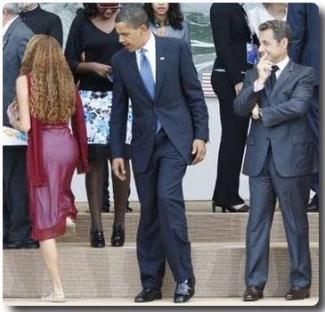

Whitehouse Affairs
There are always various things happening inside the White House, and although most people won't believe in the frivolous methods of presidential affairs, they are willing to read articles like these. Now, Obama isn't always the president. Sometimes, he's just a regular person, especially behind the white house.
Now, why do they call it weed? It surely wasn't because it became a trend. As a matter of fact, weed is a term Obama spoke of when he was gardening Marijuana in his backyard. It was like weeding to him until one day he got high from it. Before he gives a speech, he always makes sure to put a bong in his mouth, sucking in the vast amounts of THC in the glass bottles.
You'd think that it's only weed inside the white house, but you couldn't be more wrong. In actuality, Obama always enjoys a good dance before he watches himself on television. The reason why the White House is off limits to young people is because walking in there is like going to a strip club, and Obama can't ruin his image by doing so. The simple solution is to just ban everyone.
Drinking Games
Now, as many of you may know, Obama is very popular for his drinking games. As a matter of fact, he throws these games once every year, where members of the illuminati join him in the ultimate game of presidential beer pong.
Naturally, everyone gets together in one large room and pretends to be president for a day. They ask themselves, "what would Obama do in this case?". Well, it's simple, really. Obama has everyone sit down so he can show off his basketball skills. Every pong he throws makes it into the red cups. This is why Obama is considered the real G of presidency.
Scandals
Now, let's be fair. As a president, things get real stressful. Obama needs to relieve stress in any way possible. This picture may seem inappropriate, but rest assured, Obama knows what [who] he is doing. He has everything under control.

Sadly, Michelle didn't like it very much when she found out about thsi picture. Naturally, Obama denied it when inquired, saying that he was interested in buying those nice shoes for his wife. Personally, I don't blame him. Who wouldn't be caught staring at those nice shoes?
Wife Troubles
What's strange about this image? I'll circle it in red just so it's clear.

Alright, do you see what I see? Yes, that is a third hand. Could this be a sign that their marriage is actually not real? We have to consider all of the right variables. What if Michelle is actually an alien from Mars? Would her children agree with being raised by a Martian? And what of Obama? What if he found out about this?
All that is going to be answered in the next issue of Presidential Affairs
The Baller That Is Obama
Now, when we say that Obama is a baller, we're not talking about him being the leader of the Lakers or anything.

We actually mean that he is in the illuminati and was a famous rapper before he became POTUS. He sold so many #1 Albums in the U.S. His Rip 'n Dip album sold 1.3 million copies on the first week of release, and people didn't even know him yet!

However, presidential duties don't allow him to make music anymore, so he always plays the most relaxing sport ever: bowling. He actually has a bowling alley right under the White House.